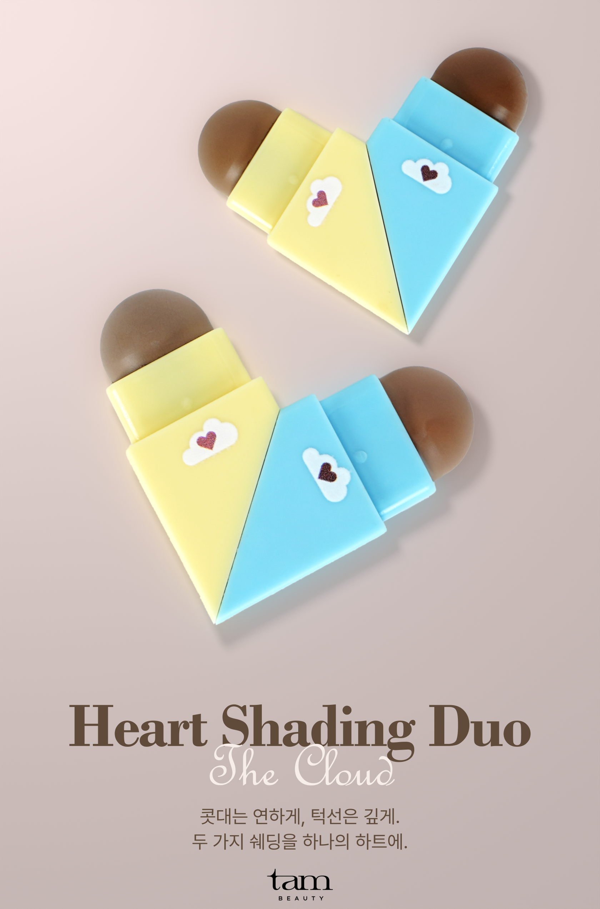
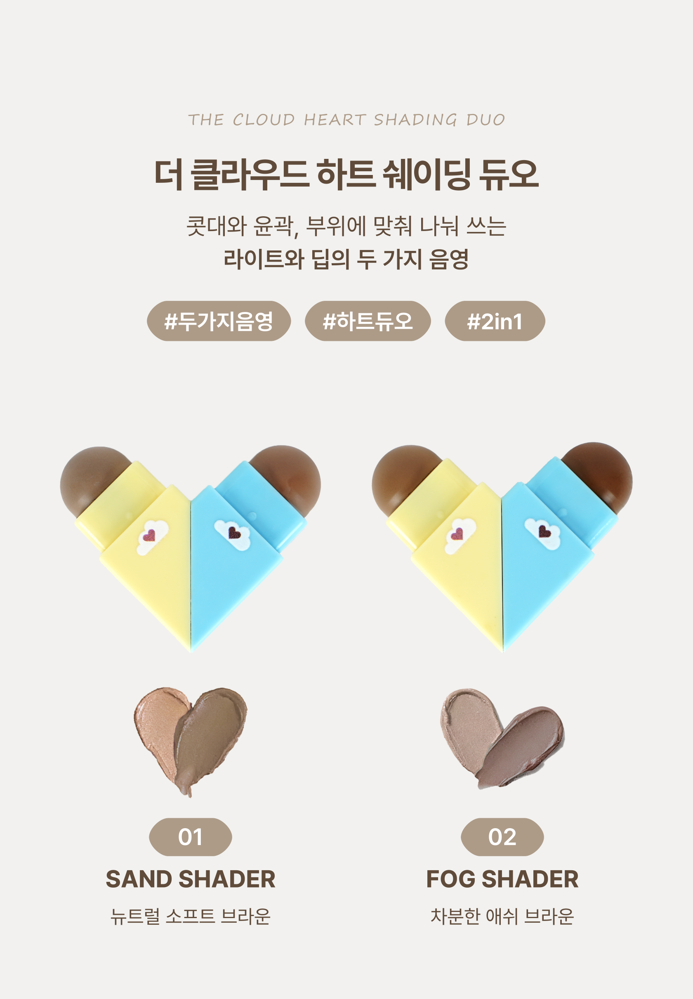
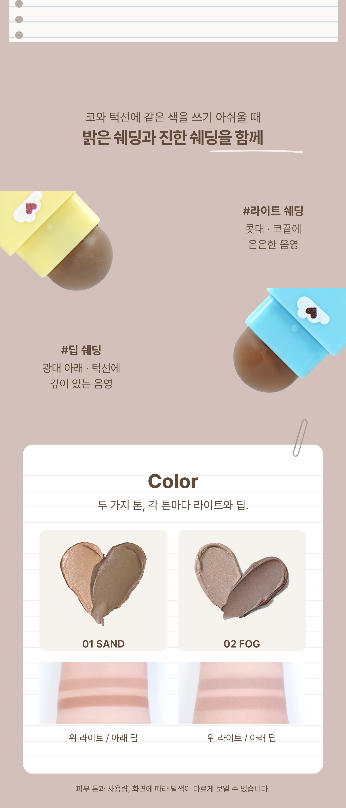
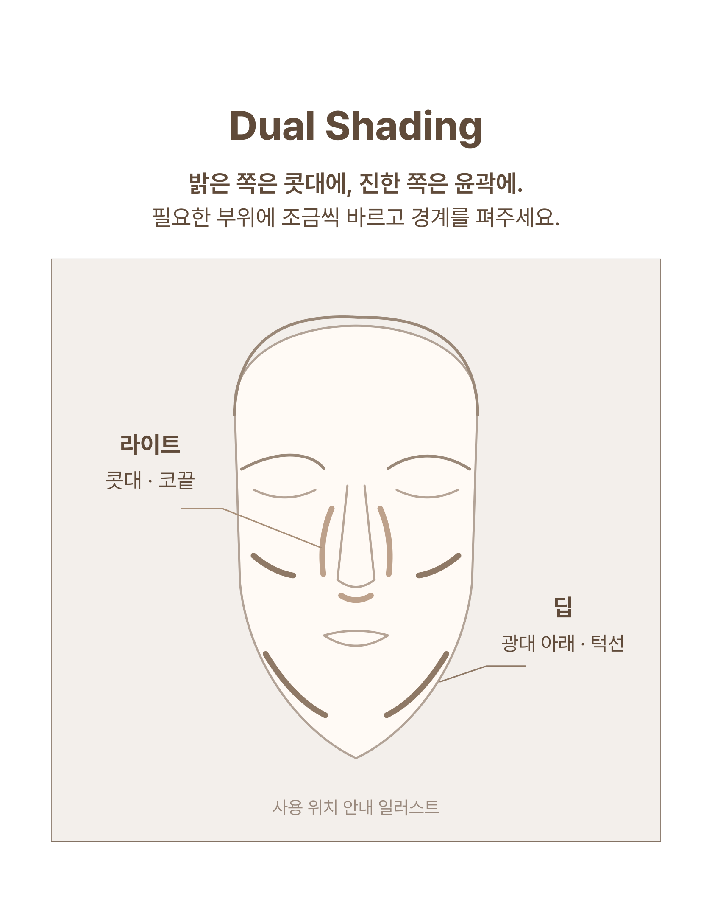
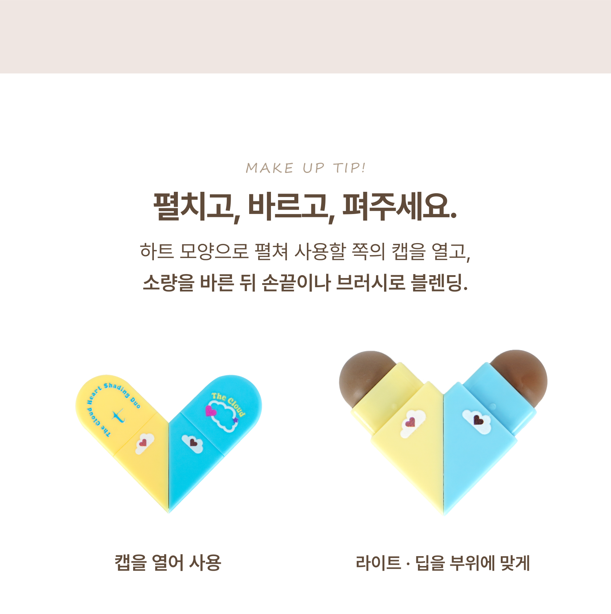
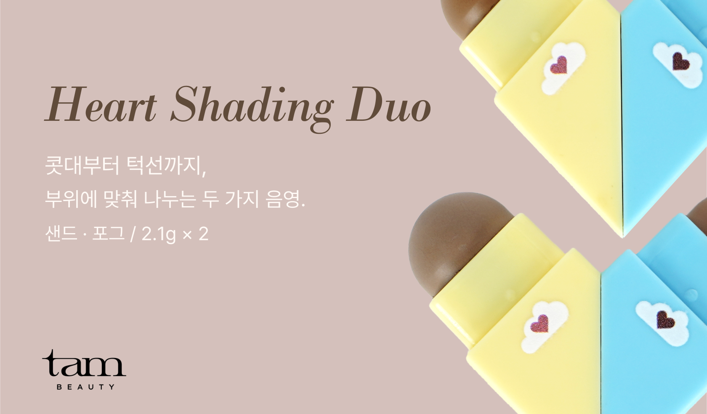

TAM BEAUTY / V7
원본의 배치와 장식을 맞춘 상세페이지
제품 사진·색상·문안은 TAM 자료입니다. 타사 모델·상품 사진은 이 비교 화면에서만 원문 URL로 표시합니다. 실제 사용 전후를 새로 만들지 않았으며, 사용 위치 그림은 효과 증거가 아닌 안내입니다.
01 · 도입
1511px 높이, 하단의 큰 세리프 제품명·손글씨·두 줄 설명·브랜드 위치를 맞췄습니다. 실물 제품 사진을 로즈베이지 바닥에 배치했습니다.
기준 · 투쿨포스쿨 공식 상세 TAM · V7
TAM · V7
02 · 제품과 옵션
1441px 높이, 제목·본문·둥근 태그·제품·호수·이름의 세로 위치를 맞췄습니다. TAM의 실제 옵션에 맞춰 3열만 2열로 바꿨습니다.
기준 · 투쿨포스쿨 공식 상세 TAM · V7
TAM · V7
03 · 두 끝과 컬러
엇갈리는 두 팁, 라벨, 노트 모양 컬러판, 종이 클립, 색상표 순서를 맞췄습니다. 타사 얼굴 발색을 제외해 이 구간 높이는 500px 줄였습니다.
기준 · 투쿨포스쿨 공식 상세 TAM · V7
TAM · V7
04 · 사용 위치
1262px 높이와 제목·두 줄 설명·큰 이미지 창의 위치를 맞췄습니다. 창에는 실제 얼굴 대신 사용 위치를 표시한 안내 일러스트를 넣었습니다.
기준 · 투쿨포스쿨 공식 상세 TAM · V7
TAM · V7
05 · 사용법
손글씨 소제목, 굵은 한글 제목, 두 줄 본문의 위치를 맞췄습니다. 아래에는 TAM 제품의 캡을 닫고 연 사진을 배치했습니다.
기준 · 투쿨포스쿨 공식 상세 TAM · V7
TAM · V7
06 · 마무리
586px 높이, 왼쪽 이탤릭 제품명과 짧은 설명, 오른쪽 제품 확대와 하단 로고의 위치를 맞췄습니다.
기준 · 투쿨포스쿨 공식 상세 TAM · V7
TAM · V7
원본 SVG와 Blender 편집 파일 보존 · 사용자 시각 승인 대기 · Cafe24 실제 업로드 보류